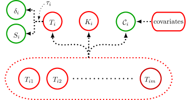

Reliability Estimation in Series Systems
Maximum Likelihood Techniques for Right-Censored and Masked Failure Data
Abstract
This paper investigates maximum likelihood techniques to estimate component reliability from masked failure data in series systems. A likelihood model accounts for right-censoring and candidate sets indicative of masked failure causes. Extensive simulation studies assess the accuracy and precision of maximum likelihood estimates under varying sample size, masking probability, and right-censoring time for components with Weibull lifetimes. The studies specifically examine the accuracy and precision of estimates, along with the coverage probability and width of BCa confidence intervals. Despite significant masking and censoring, the maximum likelihood estimator demonstrates good overall performance. The bootstrap yields correctly specified confidence intervals even for small sample sizes. Together, the modeling framework and simulation studies provide rigorous validation of statistical learning from masked reliability data.
1 Introduction
Quantifying the reliability of individual components in a series system [Agustin-2011] is challenging when only system-level failure data is observable, especially when this data is masked by right-censoring and ambiguity about the cause of failure. This paper develops and validates maximum likelihood techniques to estimate component reliability from right-censored lifetimes and candidate sets indicative of masked failure causes. Specific contributions include:
-
•
Deriving a likelihood model that incorporates right-censoring and candidate sets to enable masked data to be used for parameter estimation.
-
•
Conducting simulation studies for a well-designed series system with component lifetimes following a Weibull distribution. We assess the accuracy and precision of maximum likelihood estimates (MLE) under varying conditions related to sample size, masking probability, and right-censoring. We found that the MLE performs well in the presence of significant masking and censoring even for relatively small samples.
-
•
Evaluating the coverage probability (accuracy) and precision of the BCa confidence intervals (CI) constructed for the MLE. We found that the CIs have good empirical coverage probability even for small sample sizes in the presence of significant masking and censoring, but that the CIs for the shape parameters were less accurate, indicating that the shape parameters are more difficult to estimate than the scale parameters.
The simulation studies focus on three key aspects:
-
1.
The impact of right-censoring on component parameter estimates.
-
2.
How masking probability for the cause of failure affects the estimates.
-
3.
The role of sample size in mitigating challenges related to censoring and masking.
Together, the likelihood framework and simulation methodology enable rigorous validation of inferring component reliability from masked system data. This expands the capability to learn properties of the latent components and perform robust statistical inference given significant data challenges.
2 Series System Model
Consider a system composed of components arranged in a series configuration. Each component and system has two possible states, functioning or failed. We have systems whose lifetimes are independent and identically distributed (i.i.d.). The lifetime of the th system is denoted by the random variable and the lifetime of its th component is denoted by the random variable . We assume the component lifetimes in a single system are statistically independent and non-identically distributed. Here, lifetime (or lifespan) is defined as the elapsed time from when the new, functioning component (or system) is put into operation until it fails for the first time. A series system fails when any component fails, thus the lifetime of the th system is given by the component with the shortest lifetime,
There are three particularly important distribution functions in reliability analysis: the reliability function, the probability density function (pdf), and the hazard function. The reliability function, , is the probability that the th system has a lifetime greater than the given duration ,
| (1) |
The pdf of is denoted by and may be defined as
Next, we introduce the hazard function. The probability that a failure occurs between the times and given that no failure occurs before time may be written as
The failure rate is given by dividing this equation by the length of the time interval, :
The hazard function for is the instantaneous failure rate at time , which is given by
| (2) |
The lifetime of the th component is assumed to follow a parametric distribution indexed by a parameter vector . The parameter vector of the overall system is defined as
where is the parameter vector of the th component.
When a random variable is parameterized by a particular , we denote the reliability function by , and the same for the other distribution functions. As a special case, for the components in a series system, we subscript by their labels, e.g, the pdf of the th component is denoted by . Two continuous random variables and have a joint pdf . Given the joint pdf , the marginal pdf of is given by
where is the support of . (If is discrete, replace the integration with a summation over .)
The conditional pdf of given , , is defined as
We may generalize all of the above to more than two random variables, e.g., the joint pdf of is denoted by .
Next, we dive deeper into these concepts and provide mathematical derivations for the reliability function, the pdf, and the hazard function of the series system. We begin with the reliability function of the series system, as given by the following theorem.
Theorem 2.1.
The series system has a reliability function given by
| (3) |
where is the reliability function of the th component.
Proof.
The reliability function is defined as
which may be rewritten as
For the minimum to be larger than , every component must be larger than ,
Since the component lifetimes are independent, by the product rule the above may be rewritten as
By definition, . Performing this substitution obtains the result
∎
Theorem 2.1 shows that the system’s overall reliability is the product of the reliabilities of its individual components. This is an important relationship in all series systems and will be used in the subsequent derivations. Next, we turn our attention to the pdf of the system lifetime, described in the following theorem.
Theorem 2.2.
The series system has a pdf given by
| (4) |
where is the pdf of the th component and is the reliability function of the th component.
Proof.
By definition, the pdf may be written as
By the product rule, this may be rewritten as
Recursively applying the product rule times results in
which simplifies to
∎
Theorem 2.2 shows the pdf of the system lifetime is a function of the pdfs and reliabilities of its components. We continue with the hazard function of the system lifetime, defined in the next theorem.
Theorem 2.3.
The series system has a hazard function given by
| (5) |
where is the hazard function of the th component.
Proof.
By Equation (2), the th series system lifetime has a hazard function defined as
Plugging in expressions for these functions results in
which can be simplified to
∎
Theorem 2.3 reveals that the system’s hazard function is the sum of the hazard functions of its components. By definition, the hazard function is the ratio of the pdf to the reliability function,
and we can rearrange this to get
| (6) |
which we sometimes find to be a more convenient form than Equation (4).
In this section, we derived the mathematical forms for the system’s reliability, probability density, and hazard functions. Next, we build upon these concepts to derive distributions related to the component cause of failure.
2.1 Component Cause of Failure
Whenever a series system fails, precisely one of the components is the cause. We denote the component cause of failure of the th series system by the discrete random variable , whose support is given by . For example, indicates that the component indexed by failed first, i.e.,
for every in the support of except for . Since we have series systems, is unique.
The system lifetime and the component cause of failure has a joint distribution given by the following theorem.
Theorem 2.4.
The joint pdf of the component cause of failure and the series system lifetime is given by
| (7) |
where and are respectively the hazard and reliability functions of the th component.
Proof.
Consider a series system with components. By the assumption that component lifetimes are mutually independent, the joint pdf of , , and is given by
where is the pdf of the th component. The first component is the cause of failure at time if and , which may be rephrased as the likelihood that , , and . Thus,
By definition, , and when we make this substitution into the above expression for , we obtain the result
Generalizing this result completes the proof. ∎
Theorem 2.4 shows that the joint pdf of the component cause of failure and system lifetime is a function of the hazard functions and reliability functions of the components. This result will be used in Section 3 to derive the likelihood function for the masked data.
The probability that the th component is the cause of failure is given by the following theorem.
Theorem 2.5.
The probability that the th component is the cause of failure is given by
| (8) |
where is the random variable denoting the component cause of failure of the th system and is the random variable denoting the lifetime of the th system.
Proof.
The probability the th component is the cause of failure is given by marginalizing the joint pdf of and over ,
By Theorem 2.4, this is equivalent to
∎
If we know the system failure time, then we can simplify the above expression for the probability that the th component is the cause of failure. This is given by the following theorem.
Theorem 2.6.
The probability that the th component is the cause of system failure given that we know the system failure occurred at time is given by
Proof.
By the definition of conditional probability,
Since , we make this substitution and simplify to obtain
∎
2.2 System and Component Reliabilities
The reliability of a system is described by its reliability function, which denotes the probability that the system is functioning at a given time, e.g., denotes the probability that the th system is functioning at time . If we want a summary measure of the system’s reliability, a common measure is the mean time to failure (MTTF), which is the expectation of the system lifetime,
| (9) |
which if certain assumptions are satisfied111 is non-negative and continuous, is a well-defined, continuous, and differential function for , and converges. is equivalent to the integration of the reliability function over its support. While the MTTF provides a summary measure of reliability, it is not a complete description. Depending on the failure characteristics, the MTTF can be misleading. For example, a system that has a high likelihood of failing early in its life may still have a large MTTF if it is fat-tailed.222A “fat-tailed” distribution refers to a probability distribution with tails that decay more slowly than those of the exponential family, such as the case with the Weibull when its shape parameter is less than . This means that extreme values are more likely to occur, and the distribution is more prone to “black swan” events or rare occurrences. In the context of reliability, a fat-tailed distribution might imply a higher likelihood of unusually long lifetimes, which can skew measures like the MTTF. [taleb2007black]
The reliability of the components in the series system determines the reliability of the system. We denote the MTTF of the th component by and, according to Theorem 2.5, the probability that the th component is the cause of failure is given by . In a well-designed series system, there are no components that are much “weaker” than any of the others, e.g., they have similar MTTFs and probabilities of being the component cause of failure. In this paper, we perform a sensitivity analysis of the MLE for a well-designed series system.
3 Likelihood Model for Masked Data
We aim to estimate an unknown parameter, , using masked data. We consider two types of masking: censoring of system failures and masking component causes of failure.
We generally encounter two types of censoring: the system failure is observed to occur within some time interval, or the system failure is not observed but we know that it was functioning at least until some point in time. The latter is known as right-censoring, which is the type of censoring we consider in this paper.
In the case of masking the component cause of failure, we may not know the precise component cause of failure, but we may have some indication. A common example is when a diagnostician is able to isolate the cause of failure to a subset of the components. We call this subset the candidate set.
In this paper, each system is put into operation and observed until either it fails or its failure is right-censored after some duration , so we do not directly observe the system lifetime but rather we observe the right-censored lifetime, , which is given by
| (10) |
We also observe an event indicator, , which is given by
| (11) |
where is an indicator function that denotes if the condition is true and otherwise. Here, indicates the th system’s failure was observed and indicates it was right-censored.333In some likelihood models, there may be more than two possible values for , but in this paper, we only consider the case where is binary. Future work could consider the case where is categorical by including more types of censoring events and more types of component cause of failure masking. If a system failure event is observed (), then we also observe a candidate set that contains the component cause of failure. We denote the candidate set for the th system by , which is a subset of .
In summary, the observed data is assumed to be i.i.d. and is given by , where each contains the following elements:
-
•
is the right-censored system lifetime of the th system.
-
•
is the event indicator for the th system.
-
•
is the set of candidate component causes of failure for the th system.
The masked data generation process is illustrated in Figure 1.

An example of masked data with a right-censoring time can be seen in Table LABEL:tab:masked_data for a series system with components.
| System | Right-censored lifetime () | Event indicator () | Candidate set () |
|---|---|---|---|
| 1 | 1 | ||
| 2 | 1 | ||
| 4 | 1 | ||
| 5 | 1 | ||
| 6 | 0 | ||
| 3 | 0 |
In our model, we assume the data is governed by a pdf, which is determined by a specific parameter, represented as within the parameter space . The joint pdf of the data can be represented as follows:
where is the observed system lifetime, is the observed event indicator, and is the observed candidate set of the th system.
This joint pdf tells us how likely we are to observe the particular data, , given the parameter . When we keep the data constant and allow the parameter to vary, we obtain what is called the likelihood function , defined as
where
is the likelihood contribution of the th system.
For each type of data, right-censored data and masked component cause of failure data, we will derive the likelihood contribution , which refers to the part of the likelihood function that this particular piece of data contributes to. We present the following theorem for the likelihood contribution model.
Theorem 3.1.
The likelihood contribution of the th system is given by
| (12) |
where indicates the th system is right-censored at time and indicates the th system is observed to have failed at time with a component cause of failure potentially masked by the candidate set .
In the following subsections, we prove this result for each type of masked data, right-censored system lifetime data and masking of the component cause of failure .
3.1 Masked Component Cause of Failure
When a system failure occurs, two types of data are observed in our data model: the system’s lifetime and a candidate set that is indicative of the component cause of failure without necessarily precisely identifying the failed component. This kind of masking of the true cause of failure is especially prevalent in industrial settings. We will revisit this idea with a real-world example to demonstrate its significance after introducing some specific theoretical conditions.
The key goal of our analysis is to estimate the parameter , which maximizes the likelihood of the observed data, and to estimate the precision and accuracy of this estimate using the Bootstrap method. To achieve this, we first need to assess the joint distribution of the system’s continuous lifetime, , and the discrete candidate set, , which can be written as
where is the pdf of and is the conditional pmf of given .
We assume the pdf is known, but we do not have knowledge of , i.e., the data generating process for candidate sets is unknown. However, it is critical that the masked data, , is correlated with the th system. This way, the conditional distribution of given may provide information about , despite our statistical interest being primarily in the series system rather than the candidate sets.
To make this problem tractable, we assume a set of conditions that make it unnecessary to estimate the generative processes for candidate sets. The most important way in which is correlated with the th system is given by assuming the following condition.
Condition 3.1.
The candidate set contains the index of the failed component, i.e.,
where is the random variable for the failed component index of the th system.
Assuming Condition 3.1, must contain the index of the failed component, but we can say little else about what other component indices may appear in . In order to derive the joint distribution of and assuming Condition 3.1, we take the following approach. We notice that and are statistically dependent. We denote the conditional pmf of given and as
Even though is not observable in our masked data model, we can still consider the joint distribution of , , and . By Theorem 2.4, the joint pdf of and is given by
where and are respectively the hazard and reliability functions of the th component. Thus, the joint pdf of , , and may be written as
| (13) |
We are going to need the joint pdf of and , which may be obtained by summing over the support of in Equation (13),
By Condition 3.1, when and , and so we may rewrite the joint pdf of and as
| (14) |
When we try to find an MLE of (see Section 4), we solve the simultaneous equations of the MLE and choose a solution that is a maximum for the likelihood function. When we do this, we find that depends on the unknown conditional pmf . So, we are motivated to seek out more conditions (that approximately hold in realistic situations) whose MLEs are independent of the pmf .
Condition 3.2.
Given an observed system failure time and candidate set , the probability of the candidate set is the same when we condition on any component cause of failure in the candidate set. That is,
for all .
Assuming Conditions 3.1 and 3.2, may be factored out of the summation in Equation (14), and thus the joint pdf of and may be rewritten as
where .
If is a function of , the MLEs are still dependent on the unknown . This is a more tractable problem, but we are primarily interested in the situation where we do not need to know or estimate to find an MLE of . The last condition we assume achieves this result.
Condition 3.3.
The masking probabilities conditioned on failure time and component cause of failure are not functions of . In this case, the conditional probability of given and is denoted by
where is not a function of .
Real-World Relevance
According to [Fran-1991], many industrial problems feature masking due to time constraints and the high costs associated with failure analysis. Crucially, these industrial scenarios often fulfill Conditions 3.1, 3.2, and 3.3, reinforcing the applicability of the results presented in this paper.
To elucidate, let’s consider a diagnostic tool used for identifying failed components in an electronic device comprising three critical components arranged in a series configuration. Two are on a common circuit board (labeled and ), while the third (labeled ) is separate. Our diagnostic tool isolates the failure to either the circuit board or the individual component but does not differentiate between components and if the failure is on the shared board. In this case, we have the following conditional probabilities for candidate sets:
Our diagnostic tool satisfies the conditions as follows:
-
•
Condition 3.1: The candidate set always contains the failed component . Our diagnostic tool is able to isolate the failure to either the circuit board or the individual component, and so the candidate set always contains the failed component.
-
•
Condition 3.2: As we vary the cause of failure , we see that the conditional probability of the given candidate set is the same for all . Our diagnostic tool cannot distinguish between components and if the shared circuit board is the cause of failure, and therefore the probability of the candidate set is the same when we condition on either component or being the cause of failure.
-
•
Condition 3.3: The probabilities associated with our diagnostic tool are fixed and do not depend on the system parameter .
By emphasizing that these conditions hold both in a general industrial context and a specific real-world example, the paper enhances its applicability and relevance to both theoreticians and practitioners.
Likelihood Contribution
When Conditions 3.1, 3.2, and 3.3 are satisfied, the joint pdf of and is given by
When we fix the sample and allow to vary, we obtain the contribution to the likelihood from the th observation when the system lifetime is exactly known () but the component cause of failure is masked by a candidate set :
| (15) |
where we dropped the factor since it is not a function of .444When doing maximum likelihood estimation, we are interested in the parameter values that maximize the likelihood function. Since is not a function of , it does not affect the location of the maximum of the likelihood function, and so we can drop it from the likelihood function.
3.2 Right-Censored Data
As described in Section 3, we observe realizations of where is the right-censored system lifetime, is the event indicator, and is the candidate set.
In the previous section, we discussed the likelihood contribution from an observation of a masked component cause of failure, i.e., . We now derive the likelihood contribution of a right-censored observation, , in our masked data model.
Theorem 3.2.
The likelihood contribution of a right-censored observation is given by
| (16) |
Proof.
When right-censoring occurs, then , and we only know that , and so we integrate over all possible values that it may have obtained,
By definition, this is just the survival or reliability function of the series system evaluated at ,
∎
3.3 Identifiability and Convergence Issues
In our likelihood model, masking and right-censoring can lead to issues related to identifiability and flat likelihood regions. Identifiability refers to the unique mapping of the model parameters to the likelihood function, and lack of identifiability can lead to multiple sets of parameters that explain the data equally well, making inference about the true parameters challenging [lehmann1998theory], while flat likelihood regions can complicate convergence [wu1983convergence].
In our simulation study, we address these challenges in a pragmatic way. Specifically, failure to converge to a solution within a maximum of 125 iterations is interpreted as evidence of the aforementioned issues, leading to the discarding of the sample.555The choice of 125 iterations was also made for practical reasons. Since we are generating millions of samples and trying to find an MLE for each in our simulation study, if we did not limit the number of iterations, the simulation study would have taken too long to run. However, in Section 5, where we discuss the bias-corrected and accelerated (BCa) bootstrap method for constructing confidence intervals, we do not discard any resamples. This strategy helps ensure the robustness of the results, while acknowledging the inherent complexities of likelihood-based estimation in models characterized by masking and right-censoring. In our simulation study, we report the convergence rates, and find that for most scenarios, the convergence rate is greater than ( once the sample is sufficiently large).
4 Maximum Likelihood Estimation
In our analysis, we use maximum likelihood estimation (MLE) to estimate the series system parameter from the masked data [bain1992, casella2002statistical]. The MLE finds parameter values that maximize the likelihood of the observed data under the assumed model. A maximum likelihood estimate, , is a solution of
| (17) |
where is the likelihood function of the observed data. For computational efficiency and analytical simplicity, we work with the log-likelihood function, denoted as , instead of the likelihood function [casella2002statistical].
Theorem 4.1.
The log-likelihood function, , for our masked data model is the sum of the log-likelihoods for each observation,
| (18) |
where is the log-likelihood contribution for the th observation:
| (19) |
Proof.
The log-likelihood function is the logarithm of the likelihood function,
Substituting from Equation (12), we consider these two cases of separately to obtain the result in Theorem 4.1. Case 1: If the th system is right-censored (),
Case 2: If the th system’s component cause of failure is masked but the failure time is known (),
By Condition 3.3, we may discard the term since it does not depend on , giving us the result
Combining these two cases gives us the result in Theorem 4.1. ∎
The MLE, , is often found by solving a system of equations derived from setting the derivative of the log-likelihood function to zero [bain1992], i.e.,
| (20) |
for each component of the parameter . When there’s no closed-form solution, we resort to numerical methods like the Newton-Raphson method.
Assuming some regularity conditions, such as the likelihood function being identifiable, the MLE has many desirable asymptotic properties that underpin statistical inference, namely that it is an asymptotically unbiased estimator of the parameter and it is normally distributed with a variance given by the inverse of the Fisher Information Matrix (FIM) [casella2002statistical]. However, for smaller samples, these asymptotic properties may not yield accurate approximations. We propose to use the bootstrap method to offer an empirical approach for estimating the sampling distribution of the MLE, in particular for computing confidence intervals.
5 Bias-Corrected and Accelerated Bootstrap Confidence Intervals
We utilize the non-parametric bootstrap to estimate the sampling distribution of the MLE. In the non-parametric bootstrap, we resample from the observed data with replacement to generate a bootstrap sample. The MLE is then computed for the bootstrap sample. This process is repeated to generate numerous bootstrap replicates of the MLE. The sampling distribution of the MLE is then estimated by the empirical distribution of the bootstrap replicates of the MLE.
Our main focus is on generating confidence intervals for the MLE. The method we use to generate confidence intervals is known as Bias-Corrected and Accelerated Bootstrap Confidence Intervals (BCa) [efron1987better], which applies two corrections to the standard bootstrap method:
-
•
Bias Correction: This adjusts for bias in the bootstrap distribution itself. This bias is measured as the difference between the mean of the bootstrap distribution and the observed statistic. It works by transforming the percentiles of the bootstrap distribution to correct for these issues. This may be a useful adjustment in our case since we are dealing with small samples with two potential sources of bias: right-censoring and masking component cause of failure.
-
•
Acceleration: This adjusts for the rate of change of the statistic as a function of the true, unknown parameter. This correction is important when the shape of the statistic’s distribution changes with the true parameter. Since we have a number of different shape parameters, , we may expect the shape of the distribution of the MLE to change as a function of the true parameter, making this correction potentially useful.
Correctly Specified Confidence Intervals
Since we are primarily interested in generating confidence intervals for small samples for a biased MLE, the BCa method is a reasonable choice for our simulation study. In our simulation study, we evaluate the performance of the BCa confidence intervals by calculating their coverage probability. A correctly specified confidence interval contains the true parameter value approximately of the time in repeated sampling.
In this study, we consider a coverage probability above to be satisfactory, as it offers a reasonable trade-off between precision and reliability. A coverage probability below this would signify undue confidence in the precision of the MLE. Conversely, a coverage probability near may indicate excessively wide intervals, thereby diminishing the precision of the MLE. Our objective is to construct confidence intervals that are as narrow as possible while achieving good empirical coverage close to the nominal level of .
While the bootstrap method provides a robust and flexible tool for statistical estimation, its effectiveness can be influenced by many factors. A few of these factors are particularly relevant to our study:
-
•
Convergence: Instances of non-convergence in our bootstrap samples were observed, which can occur when the estimation method, like the MLE used in our analysis, fails to converge due to the specifics of the resampled data [casella2002statistical]. This issue can potentially introduce bias or reduce the effective sample size of our bootstrap distribution.
-
•
Small Samples: The bootstrap’s accuracy can be compromised with small sample sizes, as the method relies on the Law of Large Numbers to approximate the true sampling distribution. For small samples, the bootstrap resamples might not adequately represent the true variability in the data, leading to inaccurate results [efron1994introduction].
-
•
Masking: Our data involves right censoring and a masking of the component cause of failure when a system failure is observed. These aspects can cause certain data points or trends to be underrepresented or not represented at all in our data, introducing bias in the bootstrap distribution [klein2005survival].
Despite these challenges, we found the bootstrap method useful in constructing correctly specified confidence intervals.
6 Series System with Weibull Components
The Weibull distribution, introduced by Waloddi Weibull in 1937, has been instrumental in reliability analysis due to its ability to model a wide range of failure behaviors. Reflecting on its utility, Weibull modestly noted that it “[…] may sometimes render good service.” [Abernethy2006] In the context of our study, we model a system as originating from components with Weibull distributed lifetimes arranged in a series configuration, producing a specific form of the likelihood model described in Section 3, which deals with challenges such as right censoring and masked component cause of failure.
The th component of the th system has a lifetime distribution given by
where is the scale parameter and is the shape parameter. The th component has a reliability function, pdf, and hazard function given respectively by
| (21) | ||||
| (22) | ||||
| (23) |
The shape parameter of the Weibull distribution is of particular importance:
-
•
indicates infant mortality. An example of how this might arise is a result of defective components being weeded out early, and the remaining components surviving for a much longer time.
-
•
indicates random failures (independent of age). An example of how this might arise is a result of random shocks to the system, but otherwise the system is age-independent.666The exponential distribution is a special case of the Weibull distribution when .
-
•
indicates wear-out failures. An example of how this might arise is a result of components wearing as they age.
We show that the lifetime of the series system composed of Weibull components has a reliability, hazard, and probability density functions given by the following theorem.
Theorem 6.1.
The lifetime of a series system composed of Weibull components has a reliability function, hazard function, and pdf respectively given by
| (24) | ||||
| (25) | ||||
| (26) |
where is the parameter vector of the series system and is the parameter vector of the th component.
Proof.
The proof for the reliability function follows from Theorem 2.1,
Plugging in the Weibull component reliability functions obtains the result
The proof for the hazard function follows from Theorem 2.3,
The proof for the pdf follows from Theorem 2.2. By definition,
Plugging in the failure rate and reliability functions given respectively by Equations (24) and (25) completes the proof. ∎
In Section 2.2, we discussed the concept of reliability, with the MTTF being a common measure of reliability. In the case of Weibull components, the MTTF of the th component is given by
| (27) |
where is the gamma function. We mentioned that the MTTF can sometimes be a poor measure of reliability, e.g., the MTTF and the probability of failing early can both be large. The Weibull is a good example of this phenomenon. If , the lifetime distribution of the th component is fat-tailed and it can exhibit both a large MTTF and a high probability of failing early. The probability of component failure given by Equation (8) is a particularly useful measure of component reliability relative to the other components in the system.
6.1 Likelihood Model
In Section 3, we discussed two separate kinds of likelihood contributions, masked component cause of failure data (with exact system failure times) and right-censored data. The likelihood contribution of the th system is given by the following theorem.
Theorem 6.2.
Let be an indicator variable that is 1 if the th system fails and 0 (right-censored) otherwise. Then the likelihood contribution of the th system is given by
| (28) |
Proof.
By Theorem 3.1, the likelihood contribution of the th system is given by
By Equation (24), the system reliability function is given by
where is the parameter vector and by Equation (23), the hazard function of the th component is given by
where is the parameter vector of the th component. Plugging these into the likelihood contribution function obtains the result. ∎
Taking the log of the likelihood contribution function obtains the following result.
Corollary 6.1.
The log-likelihood contribution of the th system is given by
| (29) |
where we drop any terms that do not depend on since they do not affect the MLE.
See Appendix LABEL:app-weibull-loglik-r for the R code that implements the log-likelihood function for the series system with Weibull components.
We find an MLE by solving (20), i.e., a point satisfying , where is the gradient of the log-likelihood function (score) with respect to . To solve this system of equations, we use Newton-like methods, which sometimes require both the gradient and the Hessian of the log-likelihood function. We analytically derive the score but we do not do the same for the Hessian of the log-likelihood function. Our reasoning is based on the following two observations:
-
•
The score function is relatively easy to derive, and it is useful to have for computing gradients efficiently and accurately, which will be useful for accurately numerically approximating the Hessian of the log-likelihood function.
-
•
The Hessian is tedious and error prone to derive, and Newton-like methods often do not require the Hessian to be explicitly computed.
The following theorem derives the score function.
Theorem 6.3.
The gradient of the log-likelihood contribution of the th system is given by
| (30) |
where
| (31) |
and
| (32) |
The result follows from taking the partial derivatives of the log-likelihood contribution of the th system given by Equation (28). It is a tedious calculation so the proof has been omitted, but the result has been verified by using a very precise numerical approximation of the gradient.
By the linearity of differentiation, the gradient of a sum of functions is the sum of their gradients, and so the score function conditioned on the entire sample is given by
| (33) |
6.2 Weibull Series System: Homogeneous Shape Parameters
In a series system, the system is only as reliable as its weakest link (weakest component). In a well-designed series system, there is no single component that is much weaker than the others. In the case of components with Weibull lifetimes, this implies the shape parameters are homogenous and the scale parameters are homogenous. The shape parameters are particularly important since they determine the failure behavior of the components.
When the shape parameters are homogenous, the lifetime of the series system with components that are Weibull distributed is also Weibull distributed, as shown in the following theorem.
Theorem 6.4.
If the shape parameters of the components are homogenous, then the lifetime series system follows a Weibull distribution with a shape parameter given by the identical shape parameters of the components and a scale parameter given by
| (34) |
where is the scale parameter of the th component.
Proof.
Given Weibull lifetimes with the same shape parameter and scale parameters , the reliability function of the series system is given by
To show that the series system lifetime is Weibull, we need to find a single scale parameter such that
which has the solution
∎
Theorem 6.5.
If a series system has Weibull components with homogeneous shape parameters, the component cause of failure is conditionally independent of the system failure time:
Proof.
By Theorem 2.6, the conditional probability of the th component being the cause of failure given the system failure time is given by
∎
According to the bias-variance trade-off, we expect the MLE of the homogenous model, which has parameters ( being he number of components in the series system), to be more biased but have less variance than the MLE of the full model, which has parameters.
7 Simulation Study: Series System with Weibull Components
In this simulation study, we assess the sensitivity of the MLE and BCa confidence intervals to various simulation scenarios for the likelihood model defined in Section 6. We begin by specifying the parameters of the series system that will be the central object of our simulation study. We consider the data in [Huairu-2013], in which they study the reliability of a series system with three components. They fit Weibull components in a series configuration to the data, resulting in an MLE with shape and scale estimates given by the first three components in Table LABEL:tab:series-sys|._To_make_the_model_slightly_more_complex,_we_add_two_more_components_to_this_series_system,_with_shape_and_scale_parameters_given_by_the_last_two_components_in_Table_\ref{tab:series-sys|._We_will_refer_to_this_system_as_the_{base}_system._\parIn_Section_\ref{reliability},_we_defined_a_well-designed_series_system_as_one_that_consists_of_components_with_similar_reliabilities,_where_we_define_reliability_in_three_ways:_the_reliability_function,_MTTF,_and_probability_that_a_specific_component_will_be_the_cause_of_failure_(which_is_a_measure_of_relative_reliability_of_the_components)._We_will_use_these_three_measures_of_reliability_to_assess_the_base_system._The_base_system_defined_in_Table_\ref{tab:series-sys|_satisfies_this_definition_of_being_a_well-designed_system_since_there_are_no_components_that_are_significantly_less_reliable_than_any_of_the_others,_component_1_being_the_most_reliable_and_component_3_being_the_least_reliable._\parThe_reliability_function,_unlike_the_other_two_measures_of_reliability,_is_not_a_summary_statistic_of_reliability,_but_is_rather_a_function_of_time._Since_most_of_our_simulations_have_the_right-censoring_time_set_to_the_$82.5\%$_quantile_of_the_series_system,_which_we_denote_here_by_$\tau_{0.825}$,_we_can_compare_the_reliability_functions_of_the_components_at_this_time._We_see_that_the_reliability_of_the_components_at_this_right-censoring_time_are_similar,_with_component_1_being_the_most_reliable_and_component_3_being_the_least_reliable._These_results_are_consistent_with_the_previous_analysis_based_on_the_MTTF_and_probability_of_component_cause_of_failure_being_similar._\parThe_shape_parameters_for_each_component_is_larger_than_$1$,_which_means_each_component_has_a_failure_characteristic_that_is_more_wear-out_than_infant_mortality._The_system_as_a_whole_is_therefore_more_likely_to_fail_due_to_wear-out_failures_than_infant_mortality._This_too_is_consistent_with_a_well-designed_system._\par\hypertarget{homogenous-shape-parameters}{\par\@@unnumbered@section{paragraph}{}{Homogenous_Shape_Parameters}}_\addcontentsline{toc}{paragraph}{Homogenous_Shape_Parameters}_\parThe_base_system_is_a_well-designed_system,_and_so_it_is_likely_that_the_likelihood_model_that_assumes_homogeneous_shape_parameters_described_in_Section_\ref{reduced-weibull}_would_provide_a_good_fit_to_any_data_generated_from_this_system._We_performed_a_preliminary_investigation_into_this_by_simulating_data_from_the_base_system,_and_deviations_from_the_base_system_that_make_the_system_less_well-designed,_and_fitting_the_homogeneous_model_to_the_data._We_found_that_the_MLE_of_the_homogeneous_model_was_very_close_to_the_true_parameter_values_for_slight_deviations_from_the_base_system,_but_the_MLE_was_biased_for_larger_deviations_from_the_base_system._This_is_consistent_with_the_bias-variance_trade-off,_where_the_MLE_of_the_homogeneous_model_is_more_biased_but_has_less_variance_than_the_MLE_of_the_full_model._We_do_not_explore_this_further_in_this_simulation_study,_but_it_is_an_interesting_avenue_for_future_research._\par\begin{table}}}